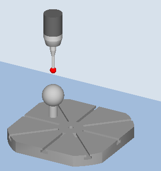
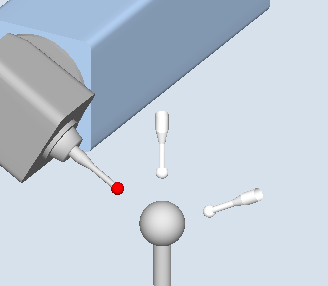
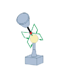
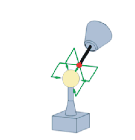

Function
With the "Measure kinematics" measuring variant (CYCLE996), it is possible to calculate the geometric vectors used to define the kinematic 5-axis transformation (TRAORI and TCARR) by measuring the positions of the sphere in space.
The measurement is essentially carried out by means of workpiece probes which scan three positions of a measuring sphere on each rotary axis. The sphere positions can be defined in accordance with user specifications so that they correspond to the geometric ratios on the machine. The only way of setting the sphere positions is to reposition the rotary axis that is to be measured in each case.
Precise knowledge of the mechanical system of the machine is not required when using CYCLE996. No dimension drawings or structural drawings are necessary to make measurements.
If the vectors of the machine are approximately known, the drawing dimensions must be entered in the vectors of the swivel data set and the machine measured with active orientable tool carrier (TCARR) or active 5-axis transformation (TRAORI). See also the programming example at the end of this chapter.
Further information: Programming Manual NC Programming
Possible fields of application
The measuring variant "Measure kinematics" can be used to determine transformation-relevant data for kinematic transformations that contain rotary axes (TRAORI, TCARR).
-
Redetermination of swivel data sets
-
Machine start-up
-
Use of swivel-mounted workholders as TCARR
-
-
Check of swivel data sets
-
Service following collisions
-
Checking the kinematics during the machining process
-
Kinematics with manual axes (manually adjustable rotary tables, swivel-mounted workholders) can be measured in the same way as kinematics with NC-controlled rotary axes.
When starting CYCLE996 a swivel data set must be parameterized with the basic data (for kinematic type, see the Programming Manual SINUMERIK 840D sl/840D/840Di sl Cycles, CYCLE800). The measurement itself must be carried out without an active kinematic transformation.
Requirements
The following requirements must be met in order to use CYCLE996 (Measure kinematics):
-
Calibrated 3D probe (probe type 710).
-
Mounted calibration sphere.
-
Oriented tool carrier has been set up (general MD 18088: $MN_MM_NUM_TOOL_CARRIER > 0)
-
The basic geometry of the machine (X, Y, Z) is rectangular and referenced.
-
The right angle refers to the workpiece spindle and should be preferably checked using a test mandrel or with the CYCLE995 measuring cycle.
-
Defined position of the rotary axes involved in the transformation.
-
Defined traverse directions in compliance with the standard of all axes involved in the transformation according to ISO 841-2001 and/or DIN 66217 (right-hand rule).
-
Linear and rotary axes must have their optimum dynamic settings. This applies especially, when the machine is to perform tool orientations during machining with active TRAORI.
-
The probe must be calibrated precisely. The calibrated tool length of the probe is included directly in the calculated vectors of the kinematics.
-
When measuring, the measuring variant "Circling around the calibration sphere with tracking of the switching direction" should be used.
| Note |
|
The vectors of the measured kinematics are only entered in the swivel data set if the manufacturer's password is active. Kinematics can only be corrected when no persistent transformation is active. |
Machine manufacturer Please observe the information provided by the machine manufacturer. |
Measuring principle
The "Measure kinematics" measuring variant always requires the following procedure:
Measure a rotary axis
Measure a second rotary axis (if this exists)
Calculate the swivel data sets (calculate kinematics)
The calculated data is activated automatically or with the aid of the user
The user (preferably the machine manufacturer) should ensure compliance with the specified sequence.
If the position of the calibration sphere within the machine can be specified as an inherent part of the design, then it will be possible to store the entire kinematic measurement process (carried out using CYCLE996) as a part program, which is extremely advantageous. As a result, the user can carry out measurement of the kinematics under a set of predefined conditions at any given point in time.
The measurement of the rotary axis must be performed in the basic system of the machine. Metric machine with G710 and positions in mm. "INCH" machine with G700 and positions in INCHES.
|  |  |
Measure: Kinematic (CYCLE996), | Measure: Kinematic (CYCLE996), |
Measuring kinematics
Starting from the kinematics initial state, the relevant rotary axes are measured individually.
Rotary axes 1 or 2 can be measured in any order. If the machine kinematics only have one rotary axis, this is measured as rotary axis 1.
The basic data for the kinematics is always the data of the tool carrier with orientation capability. The 1st dynamic 5-axis transformation can be supported, this should preferably have transformation type 72 (vectors from TCARR data).
The linear and rotary axes must be prepositioned at starting positions P1 to P3 before measuring cycle CYCLE996
In each of the sphere (rotary axis) positions selected, measuring is performed in accordance with the parameters and by calling CYCLE996.
The kinematics are calculated using a separate, parameterized call of CYCLE996.
When the 3rd measurement has been completed, the results of the measurement and the CYCLE996 setting "Calculate kinematics" are written to the _OVR[ ] result parameters. When the "Enter vectors" function is selected (refer to
S_MVAR,S_TC), then data is output to the swivel data set that has been set-up (TCARR, TRAORI(1)).A protocol file with the measurement results in an appropriate data format (machine data or TCARR data) can be optionally output.
| Note |
Requirements for measuring the kinematics with active TRAORI or active TCARR
|
Input screen forms "kinematics"
CYCLE996 has to be called three times in order to complete the entire measuring and vector calculation process for one rotary axis. Between cycle calls, the user must reposition the rotary axis to be measured. Any rotary axis that is not being measured must not be repositioned during the measurement procedure. The linear axes are positioned at the starting positions P1, P2, P3.
The 1st to 3rd measurements are called using the respective softkeys.
At the end of the 3rd measurement, the vectors of the measured rotary axis are calculated at the call. The requirement for this is that the 1st to 3rd measurements have been performed for the respective rotary axis and that the corresponding measurement results (center points of the calibration the calibration sphere) have been saved. The vectors of the machine kinematics are then calculated in full when both rotary axes have been measured. The measurement counter, parameter _OVR[40], is displayed in the result bit or in the protocol.
Measurement for kinematics with swivel head:
1st measurement P1 (initial state) | 2nd measurement P2 | 3rd measurement P3 |
 |  |  |
For the 2nd and 3rd measurements, the rotary axis to be measured is rotated around the largest possible angle. The calibration sphere position must be stationary during the measurements.
Starting position before the measurement
A rotary axis is measured by calling CYCLE996 three times (measurements 1 to 3).
The probe ball must be able to reach the equator of the calibration sphere. The 1st measurement must take place in the initial state of the kinematics. If the 1st rotary axis rotates parallel to the spindle without an offset in head kinematics (clevis head), the 1st rotary axis can be measured with the probe applied. The 2nd rotary axis is not in the initial state when measuring the 1st rotary axis.
The starting position of the probe must be approached by the user or from the user program (see example program). The probe must be prepositioned in the direction of the tool orientation (ORI) above the highest point of the calibration sphere (probe aligned with the center of the sphere). After approaching the starting position, the distance (A) from the calibration sphere should be approximately DFA.
| Note |
Measuring variant "Positioning on a circular path":For the variant "Positioning on circular path", positioning through 90° is always in the mathematical positive direction. |
Position after the end of the measuring cycle
After each measurement (1 to 3) of a rotary axis, the probe is located above the calibration sphere at a maximum distance of the measurement path DFA.